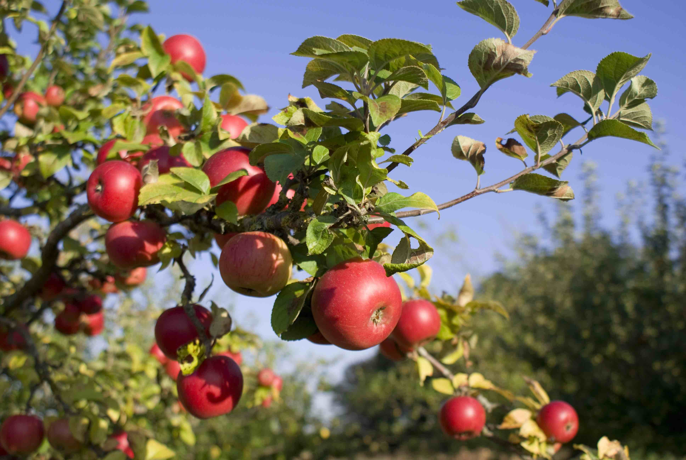

Building Joy
Morristown NJApril 12-13, 2019
Joy and happiness are more than “extras” in life. Joyful people are more successful in their careers and relationships, they give more generously of their time and money to others. And, of course they experience life as being more fun and meaningful, something we all want more of for ourselves!
In this workshop we will look at ways to build a thriving and joyful life and let go of the endless “chasing after” success and achievement which can lead to so much emptiness.
Utilizing the work of Grethen Rubin, Rick Foster, Greg Hicks and James Baraz among others and implementing experiential techniques such as imagery and group exercises we will explore and learn together, putting together tools and techniques to build a more joy-filled life.
Check Stephanie's EventBrite for upcoming sessions near you!